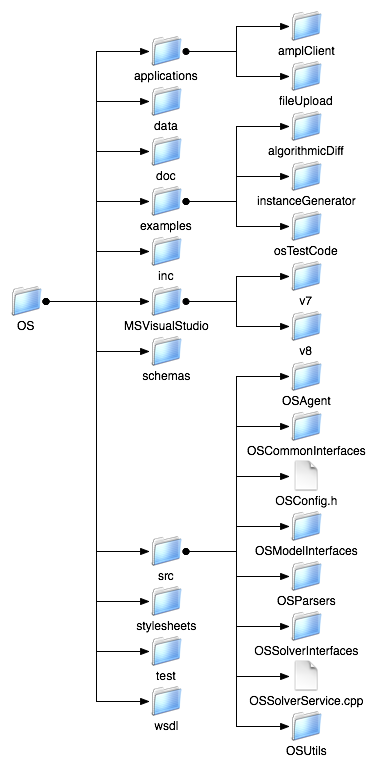

Next: OS Protocols
Up: Optimization Services 1.0 User's
Previous: Platforms
Contents
The OS Project Components
The directories in the project root are outlined in Figure 1.
If you download the OS package, you get these additional COIN-OR projects. The links to the project home pages are provided below and give more information on these projects.
The following directories are also in the project root.
- bin - after executing make install the bin directory will contain OSSolverService, clp, cbc, cbc-generic and symphony.
- Data - this directory contains numerous test problems that are used by the unitTest for many COIN-OR projects.
- doxydoc - is a folder for documentation.
- include - is a directory for header files. If the user wishes to write code to link against any of the libraries in the lib directory, it may be necessary to include these header files.
- lib - is a directory of libraries. After running make install the OS library along with all other COIN-OR libraries are installed in lib.
- ThirdParty - is a directory for third party software. For example, if AMPL related software such as OSAmplClient is used, then certain AMPL libraries need to be present. This should go into the ASL directory in ThirdParty.
The directories in the OS directory are outlined in Figure 3. The OS directories include the following:
Figure 3:
The OS directory.
|

|
- applications - is a directory that holds the OSAmplClient and fileUpload applications. See Section 12.
- data - is a directory that holds test problems. These test problems are used by the unitTest. Many of these files are also used to illustrate how the OSSolverService works. See Section 10.
- doc - is the directory with documentation, including this OS User's Manual.
- examples - is a directory with code examples that illustrate various aspects of the OS project. These are described in Section 13.
- inc - is the directory with the config�Fos.h file which has information about which projects are included in the distribution.
- m4 - is a directory that contains macro scripts written in the m4 language for auto configuration.
- MSVisualStudio - is a directory that contains solution files for the Microsoft Visual Studio IDE. The subdirectories are organized by the version of Visual Studio. We currently provide a solution file for Version 7 and 8.
- schemas - is the directory that contains the W3C XSD (see www.w3c.org) schemas that are behind the OS standards. These are described in more detail in Section 6.
- src - is the directory with all of the source code for the OS Library and for the executable OSSolverService. The OS Library components are described in Section 7.
- stylesheets - this directory contains the XSLT stylesheet that is used to transform the solution instance in OSrL format into HTML so that it can be displayed in a browser.
- test - this directory contains the unitTest.
- wsdl - is a directory of WSDL (Web Services Discovery Language) files. These are used to specify the inputs and outputs for the methods and other invocation details provided by a Web service. The most relevant file for the current version of the OS project is OShL.wsdl. This describes the set of inputs and outputs for the methods implemented in the OSSolverService. See Section 10.
Next: OS Protocols
Up: Optimization Services 1.0 User's
Previous: Platforms
Contents
Kipp Martin
2008-01-16